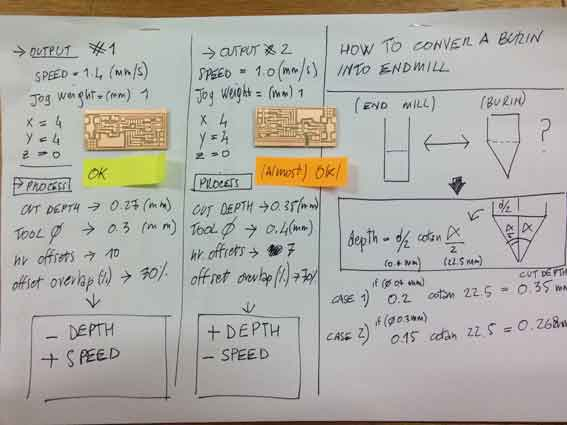

Electronics production
FabISP
For this assignment I experimented to mill both with Modela and I-Modela with FabISPKey and FabISP. I then soldered only the FabISP milled with I-Modela
The FabISP is an in-system programmer for AVR microcontrollers, designed for production within a FabLab. It allows you to program the microcontrollers on other boards you make.The Neil's FabISP is based on David Mellis's FabISP which is based on Limor's USBTinyISP which is based on Dick Streefland's USBTiny.
1 | pcb milling with Modela and Fab Modules
For the pcb miling I decided frist to try fabricating the version 2.3 FabISPkey, based on the design of Andy in which the USB connector has been replaced with a board edge USB connector taken from the SparkFun library.
I downloaded the files in his page, the png version, in order to use the
Modela MDX 20 Roland milling machine and Fab Modules as CAM.

I previously downloaded the Fab Modules here
and installed them on Ubuntu operating system.
For the first phase of the Electronics production module, since the material supply of FR1 and electronics components for the FabISP wasn't available yet, I tried just to experimenting milling the pcb with the Modela MDX20, but using instead a piece of FR2 that was available at my lab. I investigated about the toxicity of the board, and I discover that it's actually quite toxic but and I took care of milling the FR2 wearing a mask.
As machine tool, since I had no 1/34 inches tool, I used a DIY burin that in the largest section has a diameter of 6 mm (as Modela MDX 20 tools show). Since the burin section is variable and moreover mine was DIY and unprecise, I couldn't establish a precise measure for its tool peak, and I had to test and retry the fabmodules settings many times in order to get a rapport between tool diameter and engrave depht close to reality.
Afterward, I learned how to calculate precisely the depht of a burin, as I will report in the milling tests I did with I-Modela.
Below the screenshot of the Fab Modules settings I used for the most acceptable pcb result I milled.
2 | pcb milling with iModela and FabModules.org/beta
To use the iModela and setting it with FabModule.org we had several problem, most of all to understand how to set XYZ origin. We digged into the iModela gcode, the RML, using the RML-1 Programming guideline to learn how to modify the GCode. We didn't succeed, meaning even if we understood how generally the rml code is composed, we didn't find any place in which set up manually (with code) the XYZ origin.
We proceeded finding this solution: we used the proprietary Roland controller that runs in Windows to manually set the Z origin, since the machine keep the setting also after rebooting it and then we switched the iModela to another laptop with Ubuntu installed, to generate the rml file and run the milling machine via Ubuntu.
We donwloaded the two pngs with traces and interior to mill the circuits.
 Traces.png
Traces.png
 Interior.png
Interior.png
Since we were not provided with the prescribed end mill tool for the FabISP (1/34 inch diameter), we used an iModela burin converting it into an end mill tool. Below a recap on how to calculate these elements, a recap of the best settings we found for FabModule for iModela and a preview of our pcb milling tests.
Output #1 (Less engraving depth, more speed)
Speed: 1.4 mm/s
Jog: 1 mm
x=4
y=4
z=0
Process
Cut depth: 0.27 mm
Tool diameter: 0.3 mm
nr offsets: 10
offsets overlap: 30%
Output #2 (more engraving depth, less speed - to not to overload the machine)
Speed: 1 mm/s
jog: 1 mm
x=4
y=4
z=0
Process
Cut depth: 0.35 mm
Tool diameters: 0.4 mm
nr offsets: 7
offsets overlap: 70%

For the interior cut, we used the 1.6 mm iModela end mill. Below the result.
3 | pcb SMD soldering and stuffing
These are all the components required to stuff the FabISP
1 ATTiny 44 microcontroller
1 Capacitor 1uF
2 Capacitor 10 pF
2 Resistor 100 ohm
1 Resistor 499 ohm
1 Resistor 1K ohm
1 Resistor 10K
one 6 pin header
1 USB connector
2 jumpers - 0 ohm resistors
1 Cystal 20MHz
two Zener Diode 3.3 V
one usb mini cable
one ribbon cable
two 6 pin connectors
And this is the file we followed to organize components layout while soldering
We prepared the pcb surface using by fluxing it in order to make tin flowing correclty within copper traces.
Once recognized and arranged all the electronic components, the SMD soldering phase has started.
Before actually start stuffing the board, we pre-tinned the pcb in every copper pads. Then, with the desolder braid, we removed the tin in excess, leaving the pcb surfaced pre-tinned and plane.
pre-tinned board
Pre-tinned desoldered board
After this process, we started soldering the USB connector, that was a quite complex step. We added more flux to make the tin flows more on the super tiny traces under the connector "racks".
Once stuffed allt he components on the board, I have got my resulting FabISP pcb.

3 | FabISP test / board remake
Once we tried to program the FabISP using an other FabISP, we realized that our boards werent' working. The main problem resulted to be the milling process that wasn't filled. So, probably the amount of copper close to MSD components was to high and created problems with conductivity and circuit functioning.
Below you can donwload the final files. Pay attention that we optimized milling process by doing two boards in one process. The pngs and the gcodes are then to produce two FabISP at once.
Settings for iModela made with FabModules
Traces
Speed: 1.4 mm/s
Jog: 1 mm
x=4
y=4
z=0
Cut depth: 0.27 mm
Tool diameter: 0.3 mm
nr offsets: -1
offsets overlap: 70%
Interior
speed: 1.2 mm/s
jog: 1 mm
x=4
y=4
z=0
cut depth: 0.5 mm
stock thickness: 1.8 mm
tool diameter: 1.6 mm
4 | FabISP programming
Following the Neil's tutorial, here the steps:
- USB power
- make clean
- make hex
- (sudo) make fuse (check programmer in Makefile, may need to repeat)
- (sudo) make program
- desolder SJ1 and SJ2
- make IDC ISP cable, connecting header pin 1 to pin 1, check wires
Outupt terminal FabISP:
<pre class="prettyprint linenums"> SabinaBarcucci-MacBook-Pro:fabISP_mac.0.8.2_firmware SabinaBarcucci$ sudo make fuse avrdude -c stk500v1 -b19200 -P /dev/tty.usbmodem1411 -p attiny44 -U hfuse:w:0xDF:m -U lfuse:w:0xFF:m avrdude: AVR device initialized and ready to accept instructions Reading | ################################################## | 100% 0.05s avrdude: Device signature = 0x1e9207 avrdude: reading input file "0xDF" avrdude: writing hfuse (1 bytes): Writing | ################################################## | 100% 0.02s avrdude: 1 bytes of hfuse written avrdude: verifying hfuse memory against 0xDF: avrdude: load data hfuse data from input file 0xDF: avrdude: input file 0xDF contains 1 bytes avrdude: reading on-chip hfuse data: Reading | ################################################## | 100% 0.02s avrdude: verifying ... avrdude: 1 bytes of hfuse verified avrdude: reading input file "0xFF" avrdude: writing lfuse (1 bytes): Writing | ################################################## | 100% 0.02s avrdude: 1 bytes of lfuse written avrdude: verifying lfuse memory against 0xFF: avrdude: load data lfuse data from input file 0xFF: avrdude: input file 0xFF contains 1 bytes avrdude: reading on-chip lfuse data: Reading | ################################################## | 100% 0.02s avrdude: verifying ... avrdude: 1 bytes of lfuse verified avrdude: safemode: Fuses OK (E:FF, H:DF, L:FF) avrdude done. Thank you. SabinaBarcucci-MacBook-Pro:fabISP_mac.0.8.2_firmware SabinaBarcucci$ sudo program sudo: program: command not found SabinaBarcucci-MacBook-Pro:fabISP_mac.0.8.2_firmware SabinaBarcucci$ sudo make program avrdude -c stk500v1 -b19200 -P /dev/tty.usbmodem1411 -p attiny44 -U flash:w:main.hex:i avrdude: AVR device initialized and ready to accept instructions Reading | ################################################## | 100% 0.05s avrdude: Device signature = 0x1e9207 avrdude: NOTE: "flash" memory has been specified, an erase cycle will be performed To disable this feature, specify the -D option. avrdude: erasing chip avrdude: reading input file "main.hex" avrdude: writing flash (1988 bytes): Writing | ################################################## | 100% 3.44s avrdude: 1988 bytes of flash written avrdude: verifying flash memory against main.hex: avrdude: load data flash data from input file main.hex: avrdude: input file main.hex contains 1988 bytes avrdude: reading on-chip flash data: Reading | ################################################## | 100% 2.33s avrdude: verifying ... avrdude: 1988 bytes of flash verified avrdude: safemode: Fuses OK (E:FF, H:DF, L:FF) avrdude done. Thank you. avrdude -c stk500v1 -b19200 -P /dev/tty.usbmodem1411 -p attiny44 -U hfuse:w:0xDF:m -U lfuse:w:0xFF:m avrdude: AVR device initialized and ready to accept instructions Reading | ################################################## | 100% 0.05s avrdude: Device signature = 0x1e9207 avrdude: reading input file "0xDF" avrdude: writing hfuse (1 bytes): Writing | ################################################## | 100% 0.02s avrdude: 1 bytes of hfuse written avrdude: verifying hfuse memory against 0xDF: avrdude: load data hfuse data from input file 0xDF: avrdude: input file 0xDF contains 1 bytes avrdude: reading on-chip hfuse data: Reading | ################################################## | 100% 0.02s avrdude: verifying ... avrdude: 1 bytes of hfuse verified avrdude: reading input file "0xFF" avrdude: writing lfuse (1 bytes): Writing | ################################################## | 100% 0.02s avrdude: 1 bytes of lfuse written avrdude: verifying lfuse memory against 0xFF: avrdude: load data lfuse data from input file 0xFF: avrdude: input file 0xFF contains 1 bytes avrdude: reading on-chip lfuse data: Reading | ################################################## | 100% 0.02s avrdude: verifying ... avrdude: 1 bytes of lfuse verified avrdude: safemode: Fuses OK (E:FF, H:DF, L:FF) avrdude done. Thank you. </pre>